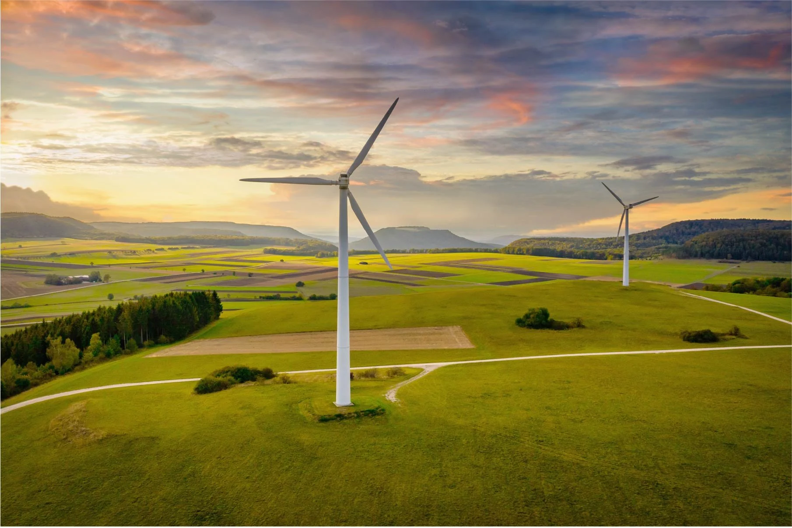

Whirly Wonders
Have you ever driven by a field of wind turbines and thought to yourself, "Wow, those are some really cool-looking giants!"? Well, you're not alone! Wind turbines are becoming more and more popular, and for good reason.
First and foremost, wind turbines are a great source of clean, renewable energy. They harness the power of the wind to generate electricity, which means less dependence on non-renewable resources like coal and oil. Plus, they produce no harmful emissions, which is great news for our planet and our health.
But wind turbines aren't just good for the environment; they can also be a sight to behold. With their towering height and spinning blades, wind turbines are like the graceful ballerinas of the energy world. And if you're lucky enough to see them at sunset, they can even be downright breathtaking.
And let's not forget about the benefits to local communities. Wind farms create jobs and stimulate the economy, all while providing a source of clean energy. Plus, they can be a great tourist attraction, drawing visitors from all over to see these majestic machines in action.
So the next time you see a wind turbine, give it a wave and a smile. It may just be a machine, but it's also a symbol of progress and hope for a brighter, cleaner future.